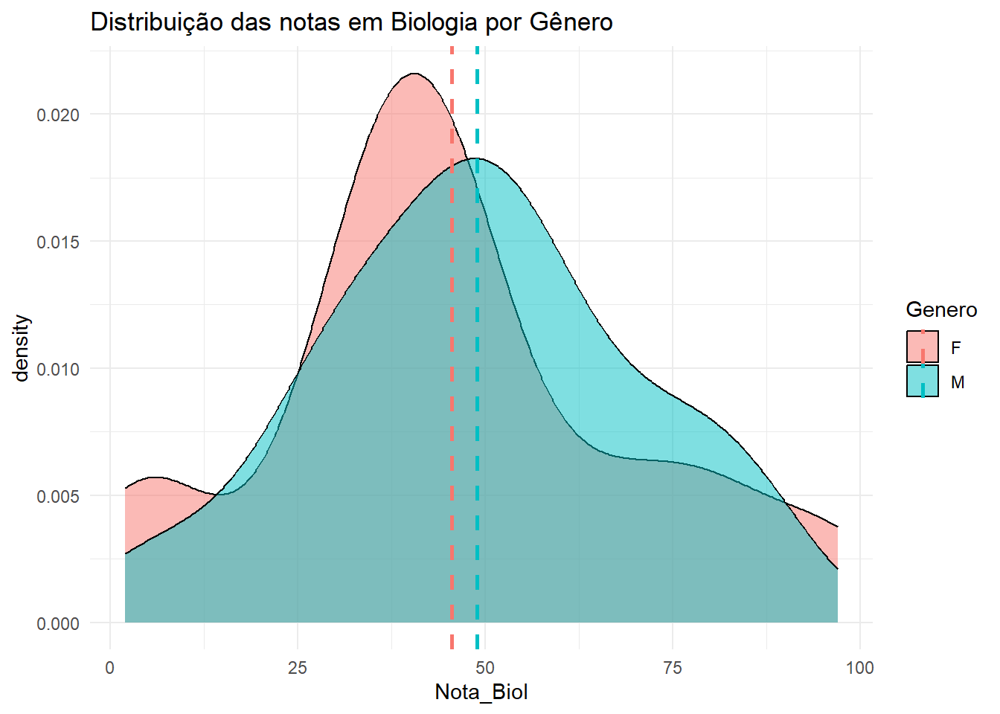

O tutorial inclui exemplos de como realizar o teste T para amostras independentes e pareadas e verificar pressupostos com comandos específicos no R, além de apresentar gráficos e tabelas para auxiliar na interpretação dos dados.
Author
Wellington Santos Souza
Published
Saturday, 25 May 2024
Este artigo foi escrito em Sábado, 25 de Maio de 2024.
Teste T para amostras independentes
Quando queremos comparar as médias de duas amostras independentes, utilizamos o teste T para amostras independentes. A hipótese nula é que as médias das duas amostras são iguais. A hipótese alternativa é que as médias das duas amostras são diferentes.
\(H_0: \mu_X = \mu_Y\)
\(H_1: \mu_X \neq \mu_Y\)
Quais são os pressupostos do teste T para amostras independentes?
A variável dependente deve ser quantitativa (discreta ou contínua) e a variável independente deve ser qualitativa, com apenas duas categorias - por exemplo, sexo (masculino/feminino), escolaridade (fundamental/médio), tratamento (placebo/tratamento) (FIGUEIREDO FILHO, 2019).
As duas amostras são independentes.
As duas amostras são normalmente distribuídas.
As duas amostras têm variâncias iguais.
\(X \sim Normal(\mu, \sigma^2_X)\)
\(X \sim Normal(\mu, \sigma^2_Y)\)
A fórmula do teste T para amostras independentes é:
\[t = \frac{(\bar{x}_1 - \bar{x}_2)}{\sqrt{\frac{s_1^2}{n_1} + \frac{s_2^2}{n_2}}}\] Onde: - \(\bar{x}_1\) e \(\bar{x}_2\) são as médias das duas amostras.
\(s_1\) e \(s_2\) são os desvios padrão das duas amostras.
\(n_1\) e \(n_2\) são os tamanhos das duas amostras.
Aplicação no R:
Code
# Instalando e carregando o pacoteif(!require(tidyverse)){install.packages("tidyverse")};library(tidyverse)if(!require(readr)){install.packages("readr")}; library(readr)if(!require(rstatix)){install.packages("rstatix")}; library(rstatix)if(!require(kableExtra)){install.packages("kableExtra")}; library(kableExtra)if(!require(broom)){install.packages("broom")}; library(broom)
Lendo os dados do Github
Os dados que vamos utilizar são os dados disponiblizados pela Fernanda Peres no seu repositório do Github (“Fernanda Peres | Estatística aplicada”, [s.d.]).
Code
dados <-read_delim("https://raw.githubusercontent.com/fernandaperes/bancosdedados/main/Bancos%20em%20csv/Banco%20de%20Dados%203.csv", delim =";")
Questão 1: Existe diferença entre as notas em Biologia/História de alunos do sexo masculino e feminino?
Hipóteses:
\(H_0: \text{A média das notas em (Biologia/história) para alunos do sexo Masculino = Feminino}\)
\(H_1: \text{A média das notas em (Biologia/história) para alunos do sexo Masculino $\neq$ Feminino}\)
Verificando a distribuição das medidas em cada grupo
Nota de Biologia
Code
media_biol <- dados |>group_by(Genero) |>summarise(media =mean(Nota_Biol, na.rm =TRUE))dados |>ggplot(aes(x = Nota_Biol, fill = Genero)) +geom_density(alpha =0.5) +theme_minimal() +labs(title ="Distribuição das notas em Biologia por Gênero")+geom_vline(data = media_biol, aes(xintercept = media, color = Genero),linetype ="dashed", size =1)

Code
# boxplotdados |>ggplot(aes(x = Genero, y = Nota_Biol, fill = Genero)) +geom_boxplot() +theme_minimal() +labs(title ="Boxplot das notas em Biologia por Gênero")
O gráfico de boxplot mostra que a distribuição das notas em Biologia para alunos do sexo masculino e feminino é semelhante.
Nota de História
Code
media_hist <- dados |>group_by(Genero) |>summarise(media =mean(Nota_Hist, na.rm =TRUE))dados |>ggplot(aes(x = Nota_Hist, fill = Genero)) +geom_density(alpha =0.5) +theme_minimal() +labs(title ="Distribuição das notas em História por Gênero")+geom_vline(data = media_hist, aes(xintercept = media, color = Genero),linetype ="dashed", size =1)
Code
# boxplotdados |>ggplot(aes(x = Genero, y = Nota_Hist, fill = Genero)) +geom_boxplot() +theme_minimal() +labs(title ="Boxplot das notas em História por Gênero")
O gráfico de boxplot mostra que a distribuição das notas em História para alunos do sexo masculino e feminino é semelhante.
Agora vamos realizar o teste T para amostras independentes. Mas antes, vamos verificar se os pressupostos do teste T para amostras independentes são atendidos.
Verificando pressupostos para o teste T para amostras independentes
Verificando normalidade da variável dependente em cada grupo
O teste de Shapiro-Wilk é um teste de normalidade que testa a hipótese nula de que os dados foram extraídos de uma população com distribuição normal.
\(H_0: \text{Os dados são normalmente distribuídos}\)
\(H_1: \text{Os dados não são normalmente distribuídos}\)
Como o valor de p é maior que \(0,05\), em todos os grupos não rejeitamos a hipótese nula. Portanto, a variável dependente é normalmente distribuída em cada grupo.
Verificando homogeneidade de variância
Notas de Biologia
Code
kable(levene_test(Nota_Biol ~ Genero, data = dados, center ="mean"))
df1
df2
statistic
p
1
30
0.1248719
0.7262806
Notas de História
Code
kable(levene_test(Nota_Hist ~ Genero, data = dados, center ="mean"))
df1
df2
statistic
p
1
30
2.842218
0.1021925
O teste de Levene é um teste de homogeneidade de variância que testa a hipótese nula de que as variâncias são iguais em todos os grupos.
\(H_0: \text{As variâncias são iguais}\)
\(H_1: \text{As variâncias não são iguais}\)
Como o valor de p é maior que \(0,05\), não rejeitamos a hipótese nula. Portanto, as variâncias são iguais em todos os grupos.
Como os pressupostos do teste T para amostras independentes são atendidos, podemos prosseguir com o teste T.
Realizando o teste T para amostras independentes
Notas de Biologia
Code
kable(tidy(t.test(Nota_Biol ~ Genero, var.equal =TRUE, data = dados)))
estimate
estimate1
estimate2
statistic
p.value
parameter
conf.low
conf.high
method
alternative
-3.4375
45.5
48.9375
-0.4176915
0.6791471
30
-20.24491
13.36991
Two Sample t-test
two.sided
Como o valor de p \((0,6791)\) é maior que \(0,05\), rejeitamos a hipótese nula. Portanto, a média das notas em Biologia para alunos do sexo masculino pode ser igual à média das notas em Biologia para alunos do sexo feminino.Outra evidência que temos é que o intervalo de confiança \((-20.24491; 13.36991)\) para a diferença das médias inclui o zero.
Notas de História
Code
kable(tidy(t.test(Nota_Hist ~ Genero, var.equal =TRUE, data = dados)))
estimate
estimate1
estimate2
statistic
p.value
parameter
conf.low
conf.high
method
alternative
-3.0625
41.5
44.5625
-0.3535687
0.7261348
30
-20.75202
14.62702
Two Sample t-test
two.sided
Como o valor de p \((0,6791)\) é maior que \(0,05\), rejeitamos a hipótese nula. Portanto, a média das notas em História para alunos do sexo masculino pode ser igual à média das notas em História para alunos do sexo feminino. Outra evidência que temos é que o intervalo de confiança \((-20.75202; 14.62702)\) para a diferença das médias inclui o zero.
Questão 2: Existe diferença entre as notas em Física/Biologia/História de alunos de escolas públicas e privadas?
Hipóteses:
\(H_0: \text{A média das notas em (Física/Biologia/história) para alunos de escolas públicas = privadas}\)
\(H_1: \text{A média das notas em (Física/Biologia/história) para alunos de escolas públicas $\neq$ privadas}\)
Verificando a distribuição das medidas em cada grupo
Nota de Física
Code
media_fisica <- dados |>group_by(Escola) |>summarise(media =mean(Nota_Fis, na.rm =TRUE))dados |>ggplot(aes(x = Nota_Fis, fill = Escola)) +geom_density(alpha =0.5) +theme_minimal() +labs(title ="Distribuição das notas em Física por Escola")+geom_vline(data = media_fisica, aes(xintercept = media, color = Escola),linetype ="dashed", size =1)
Code
# Boxplotdados |>ggplot(aes(x = Escola, y = Nota_Fis, fill = Escola)) +geom_boxplot() +theme_minimal() +labs(title ="Boxplot das notas em Física por Escola")
O gráfico de boxplot mostra que a distribuição das notas em Física para alunos de escolas públicas e privadas parece ser diferentes.
Nota de Biologia
Code
media <- dados |>group_by(Escola) |>summarise(media =mean(Nota_Biol, na.rm =TRUE))dados |>ggplot(aes(x = Nota_Biol, fill = Escola)) +geom_density(alpha =0.5) +theme_minimal() +labs(title ="Distribuição das notas em Biologia por Escola") +geom_vline(data = media, aes(xintercept = media, color = Escola),linetype ="dashed", size =1)
Code
# Boxplotdados |>ggplot(aes(x = Escola, y = Nota_Biol, fill = Escola)) +geom_boxplot() +theme_minimal() +labs(title ="Boxplot das notas em Biologia por Escola")
O gráfico de boxplot mostra que a distribuição das notas em Biologia para alunos de escolas públicas e privadas parece ser diferentes.
Nota de História
Code
media <- dados |>group_by(Escola) |>summarise(media =mean(Nota_Hist, na.rm =TRUE))dados |>ggplot(aes(x = Nota_Hist, fill = Escola)) +geom_density(alpha =0.5) +theme_minimal() +labs(title ="Distribuição das notas em História por Escola") +geom_vline(data = media, aes(xintercept = media, color = Escola),linetype ="dashed", size =1)
Code
# Boxplotdados |>ggplot(aes(x = Escola, y = Nota_Hist, fill = Escola)) +geom_boxplot() +theme_minimal() +labs(title ="Boxplot das notas em História por Escola")
O gráfico de boxplot mostra que a distribuição das notas em História para alunos de escolas públicas e privadas parece ser diferentes.
Verificando pressupostos para o teste T para amostras independentes
Verificando normalidade da variável dependente em cada grupo
Como o valor de p é menor que \(0,05\), em quase todos os grupos rejeitamos a hipótese nula. Portanto, a variável dependente não é normalmente distribuída em todos os grupos. Com isso, já poderíamos parar por aqui, pois o teste T para amostras independentes requer que a variável dependente seja normalmente distribuída em cada grupo.
Verificando homogeneidade de variância
Code
kable(levene_test(Nota_Biol ~ Escola, data = dados, center ="mean"))
df1
df2
statistic
p
1
30
4.962929
0.0335438
Code
kable(levene_test(Nota_Fis ~ Escola, data = dados, center ="mean"))
df1
df2
statistic
p
1
30
2.262799
0.1429705
Code
kable(levene_test(Nota_Hist ~ Genero, data = dados, center ="mean"))
df1
df2
statistic
p
1
30
2.842218
0.1021925
Assim como o teste de normalidade, o teste de homogeneidade de variância também não é atendido. Portanto, não podemos prosseguir com o teste T para amostras independentes.
Questão 3: Existe diferença entre as notas em Biologia/História de alunos que se sentam na frente e fundo da sala?
Hipóteses:
\(H_0: \text{A média das notas em (Biologia/história) para alunos que se sentam na frente = fundo}\)
\(H_1: \text{A média das notas em (Biologia/história) para alunos que se sentam na frente $\neq$ fundo}\)
Verificando a distribuição das medidas em cada grupo
Notas de Biologia
Code
media <- dados |>group_by(Posicao_Sala) |>summarise(media =mean(Nota_Biol, na.rm =TRUE))dados |>ggplot(aes(x = Nota_Biol, fill = Posicao_Sala)) +geom_density(alpha =0.5) +theme_minimal() +labs(title ="Distribuição das notas em Biologia por Posição na Sala") +geom_vline(data = media, aes(xintercept = media, color = Posicao_Sala),linetype ="dashed", size =1)
Code
# Boxplotdados |>ggplot(aes(x = Posicao_Sala, y = Nota_Biol, fill = Posicao_Sala)) +geom_boxplot() +theme_minimal() +labs(title ="Boxplot das notas em Biologia por Posição na Sala")
O gráfico de boxplot mostra que a distribuição das notas em Biologia para alunos que se sentam na frente e fundo da sala parece ser diferentes.
Notas de História
Code
media <- dados |>group_by(Posicao_Sala) |>summarise(media =mean(Nota_Hist, na.rm =TRUE))dados |>ggplot(aes(x = Nota_Hist, fill = Posicao_Sala)) +geom_density(alpha =0.5) +theme_minimal() +labs(title ="Distribuição das notas em História por Posição na Sala") +geom_vline(data = media, aes(xintercept = media, color = Posicao_Sala),linetype ="dashed", size =1)
Code
# Boxplotdados |>ggplot(aes(x = Posicao_Sala, y = Nota_Hist, fill = Posicao_Sala)) +geom_boxplot() +theme_minimal() +labs(title ="Boxplot das notas em História por Posição na Sala")
O gráfico de boxplot mostra que a distribuição das notas em História para alunos que se sentam na frente e fundo da sala parece ser diferentes.
Verificando pressupostos para o teste T para amostras independentes
Verificando normalidade da variável dependente em cada grupo
Como o valor de p é maior que \(0,05\), em todos os grupos não rejeitamos a hipótese nula. Portanto, a variável dependente é normalmente distribuída em cada grupo.
Verificando homogeneidade de variância
Code
kable(levene_test(Nota_Hist ~ Posicao_Sala, data = dados, center ="mean"))
df1
df2
statistic
p
1
30
11.9759
0.0016393
O teste de homogeneidade de variância não foi atendido. Portanto, não podemos prosseguir com o teste T para amostras independentes para a variável Nota_Hist.
Code
kable(levene_test(Nota_Biol ~ Posicao_Sala, data = dados, center ="mean"))
df1
df2
statistic
p
1
30
2.786168
0.1054859
Já aqui, o teste de homogeneidade de variância foi atendido. Portanto, podemos prosseguir com o teste T para amostras independentes para a variável Nota_Biol.
Realizando o teste T para amostras independentes
Code
kable(tidy(t.test(Nota_Biol ~ Posicao_Sala, var.equal =TRUE, data = dados)))
estimate
estimate1
estimate2
statistic
p.value
parameter
conf.low
conf.high
method
alternative
18.03529
56.8
38.76471
2.377442
0.0240075
30
2.542596
33.52799
Two Sample t-test
two.sided
Como o valor de p \((0.02401)\) é menor que \(0,05\), rejeitamos a hipótese nula. Portanto, a média das notas em Biologia para alunos que se sentam na frente pode ser diferente da média das notas em Biologia para alunos que se sentam no fundo. Outra evidência que temos é que o intervalo de confiança \((2.542596; 33.527992)\) para a diferença das médias não inclui o zero.
Teste T para amostras pareadas
Quando queremos comparar as médias de duas amostras pareadas, utilizamos o teste T para amostras pareadas. A hipótese nula é que as médias das duas amostras são iguais. A hipótese alternativa é que as médias das duas amostras são diferentes.
Para realizar o teste T para amostras pareadas, precisamos de duas amostras pareadas. Por exemplo, a nota de um aluno na primeira prova de Biologia e a nota do mesmo aluno na segunda prova de Biologia.Ou duas condições experimentais aplicadas ao mesmo grupo de indivíduos.
\(H_0: \mu_X = \mu_Y\)
\(H_1: \mu_X \neq \mu_Y\)
Quais são os pressupostos do teste T para amostras pareadas?
As duas amostras são pareadas.
As diferenças entre as duas amostras são normalmente distribuídas.
\(X \sim Normal(\mu, \sigma^2_X)\)
\(Y \sim Normal(\mu, \sigma^2_Y)\)
A fórmula do teste T para amostras pareadas é:
\[t = \frac{\bar{d}}{\frac{s_d}{\sqrt{n}}}\]
Onde:
\(\bar{d}\) é a média das diferenças entre as duas amostras.
\(s_d\) é o desvio padrão das diferenças entre as duas amostras.
\(n\) é o tamanho das amostras.
Aplicação no R:
Para fins didáticos, vamos criar um exemplo fictício de um teste T para amostras pareadas.Para tal, vamos supor que a nota de física será a nota da segunda prova de Biologia.
Code
dados_01 <- dados |>rename(Nota_Biol_2 = Nota_Fis)
Verificando distribuição dos dados
Code
mean_Nota_Biol <-mean(dados_01$Nota_Biol, na.rm =TRUE)mean_Nota_Biol_2 <-mean(dados_01$Nota_Biol_2, na.rm =TRUE)dados_01 |>ggplot(aes(x = Nota_Biol)) +geom_density(aes(fill ="Nota_Biol"), alpha =0.5) +geom_density(aes(x = Nota_Biol_2, fill ="Nota_Biol_2"), alpha =0.5) +theme_minimal() +labs(title ="Distribuição das notas de Biologia e Biologia 2", fill ="Variável") +geom_vline(aes(xintercept = mean_Nota_Biol, color ="Nota_Biol"), linetype ="dashed", size =1) +geom_vline(aes(xintercept = mean_Nota_Biol_2, color ="Nota_Biol_2"), linetype ="dashed", size =1)
Code
dados_01 |>pivot_longer(cols =c(Nota_Biol, Nota_Biol_2), names_to ="Prova", values_to ="Nota") |>ggplot(aes(x = Prova, y = Nota, fill = Prova)) +geom_boxplot() +theme_minimal() +labs(title ="Boxplot das notas de Biologia e Biologia 2")
Aqui, podemos notar que a distribuição das notas de Biologia e Biologia 2 é semelhante.Agora vamos realizar o teste T para amostras pareadas para verificar se isso se confirma.
Como o valor de p \((0.3335)\) é maior que \(0,05\), não rejeitamos a hipótese nula. Portanto, a média das notas de Biologia pode ser igual à média das notas de Biologia 2. Outra evidência que temos é que o intervalo de confiança \((-2.292, 6.292)\) para a diferença das médias inclui o zero.
Referências
BARBETTA, P. A. Estatística aplicada às Ciências Sociais. [s.l.] Editora UFSC, 2014.
FIGUEIREDO FILHO, D. B. Métodos quantitativos em ciência política. [s.l.] Editora Intersaberes, 2019.
GASPAR, J. DE S. Como descrever meus dados e quais testes estatísticos devo usar? Zenodo, , 22 abr. 2023. Disponível em: https://zenodo.org/records/7855276. Acesso em: 23 jan. 2024
---title: "Teste T para amostras independentes e amostras pareadas"subtitle: "Aplicação em R"description: "O tutorial inclui exemplos de como realizar o teste T para amostras independentes e pareadas e verificar pressupostos com comandos específicos no R, além de apresentar gráficos e tabelas para auxiliar na interpretação dos dados."author: "Wellington Santos Souza"date: "2024-05-25"format: html: code-fold: true code-copy: true code-tools: truecategories: [t-test, r, amostras, p-value, normalidade, homogeneidade, teste-t, estatística, ciência de dados, análise de dados, teste de hipóteses, teste-t-amostras-independentes, teste-t-amostras-pareadas]open-graph: description: "Curva-Normal" image: ../images/05.test-t/OIP.jpgtwitter-card: description: "Curva-Normal" image: ../images/05.test-t/OIP.jpg---*Este artigo foi escrito em Sábado, 25 de Maio de 2024.*{fig-alt="Curva-Normal" fig-title="Curva Normal"}## Teste T para amostras independentesQuando queremos comparar as médias de duas amostras independentes, utilizamos o teste T para amostras independentes. A hipótese nula é que as médias das duas amostras são iguais. A hipótese alternativa é que as médias das duas amostras são diferentes.$H_0: \mu_X = \mu_Y$$H_1: \mu_X \neq \mu_Y$Quais são os pressupostos do teste T para amostras independentes?A variável dependente deve ser quantitativa (discreta ou contínua) e a variável independente deve ser qualitativa, com apenas duas categorias - por exemplo, sexo (masculino/feminino), escolaridade (fundamental/médio), tratamento (placebo/tratamento) (FIGUEIREDO FILHO, 2019).- As duas amostras são independentes.- As duas amostras são normalmente distribuídas.- As duas amostras têm variâncias iguais.$X \sim Normal(\mu, \sigma^2_X)$$X \sim Normal(\mu, \sigma^2_Y)$A fórmula do teste T para amostras independentes é:$$t = \frac{(\bar{x}_1 - \bar{x}_2)}{\sqrt{\frac{s_1^2}{n_1} + \frac{s_2^2}{n_2}}}$$ Onde: - $\bar{x}_1$ e $\bar{x}_2$ são as médias das duas amostras.- $s_1$ e $s_2$ são os desvios padrão das duas amostras.- $n_1$ e $n_2$ são os tamanhos das duas amostras.Aplicação no R:```{r}#| warning: FALSE#| message: FALSE# Instalando e carregando o pacoteif(!require(tidyverse)){install.packages("tidyverse")};library(tidyverse)if(!require(readr)){install.packages("readr")}; library(readr)if(!require(rstatix)){install.packages("rstatix")}; library(rstatix)if(!require(kableExtra)){install.packages("kableExtra")}; library(kableExtra)if(!require(broom)){install.packages("broom")}; library(broom)```Lendo os dados do GithubOs dados que vamos utilizar são os dados disponiblizados pela Fernanda Peres no seu repositório do Github (“Fernanda Peres \| Estatística aplicada”, \[s.d.\]).```{r}#| warning: FALSE#| message: FALSE#| dados <-read_delim("https://raw.githubusercontent.com/fernandaperes/bancosdedados/main/Bancos%20em%20csv/Banco%20de%20Dados%203.csv", delim =";")```Dando uma olhada nos dados```{r}#| warning: FALSE#| message: FALSE# Verificando os dadoskable(head(dados))``````{r}#| warning: FALSE#| message: FALSE# Verificando estrutura dos dados(str(dados))```**Questões que vamos responder com o teste t****Questão 1:** Existe diferença entre as notas em Biologia/História de alunos do sexo masculino e feminino?Hipóteses:$H_0: \text{A média das notas em (Biologia/história) para alunos do sexo Masculino = Feminino}$$H_1: \text{A média das notas em (Biologia/história) para alunos do sexo Masculino $\neq$ Feminino}$**Verificando a distribuição das medidas em cada grupo**Nota de Biologia```{r}#| warning: FALSE#| message: FALSEmedia_biol <- dados |>group_by(Genero) |>summarise(media =mean(Nota_Biol, na.rm =TRUE))dados |>ggplot(aes(x = Nota_Biol, fill = Genero)) +geom_density(alpha =0.5) +theme_minimal() +labs(title ="Distribuição das notas em Biologia por Gênero")+geom_vline(data = media_biol, aes(xintercept = media, color = Genero),linetype ="dashed", size =1) ``````{r}#| warning: FALSE#| message: FALSE# boxplotdados |>ggplot(aes(x = Genero, y = Nota_Biol, fill = Genero)) +geom_boxplot() +theme_minimal() +labs(title ="Boxplot das notas em Biologia por Gênero")```O gráfico de boxplot mostra que a distribuição das notas em Biologia para alunos do sexo masculino e feminino é semelhante.Nota de História```{r}#| warning: FALSE#| message: FALSEmedia_hist <- dados |>group_by(Genero) |>summarise(media =mean(Nota_Hist, na.rm =TRUE))dados |>ggplot(aes(x = Nota_Hist, fill = Genero)) +geom_density(alpha =0.5) +theme_minimal() +labs(title ="Distribuição das notas em História por Gênero")+geom_vline(data = media_hist, aes(xintercept = media, color = Genero),linetype ="dashed", size =1) ``````{r}#| warning: FALSE#| message: FALSE# boxplotdados |>ggplot(aes(x = Genero, y = Nota_Hist, fill = Genero)) +geom_boxplot() +theme_minimal() +labs(title ="Boxplot das notas em História por Gênero")```O gráfico de boxplot mostra que a distribuição das notas em História para alunos do sexo masculino e feminino é semelhante.Agora vamos realizar o teste T para amostras independentes. Mas antes, vamos verificar se os pressupostos do teste T para amostras independentes são atendidos.**Verificando pressupostos para o teste T para amostras independentes**1. Verificando normalidade da variável dependente em cada grupo```{r}#| warning: FALSE#| message: FALSEkable(dados |>group_by(Genero) |>shapiro_test(Nota_Biol, Nota_Hist))```O teste de Shapiro-Wilk é um teste de normalidade que testa a hipótese nula de que os dados foram extraídos de uma população com distribuição normal.$H_0: \text{Os dados são normalmente distribuídos}$$H_1: \text{Os dados não são normalmente distribuídos}$Como o valor de p é maior que $0,05$, em todos os grupos não rejeitamos a hipótese nula. Portanto, a variável dependente é normalmente distribuída em cada grupo.2. Verificando homogeneidade de variânciaNotas de Biologia```{r}#| warning: FALSE#| message: FALSEkable(levene_test(Nota_Biol ~ Genero, data = dados, center ="mean"))```Notas de História```{r}#| warning: FALSE#| message: FALSEkable(levene_test(Nota_Hist ~ Genero, data = dados, center ="mean"))```O teste de Levene é um teste de homogeneidade de variância que testa a hipótese nula de que as variâncias são iguais em todos os grupos.$H_0: \text{As variâncias são iguais}$$H_1: \text{As variâncias não são iguais}$Como o valor de p é maior que $0,05$, não rejeitamos a hipótese nula. Portanto, as variâncias são iguais em todos os grupos.Como os pressupostos do teste T para amostras independentes são atendidos, podemos prosseguir com o teste T.**Realizando o teste T para amostras independentes**Notas de Biologia```{r}#| warning: FALSE#| message: FALSEkable(tidy(t.test(Nota_Biol ~ Genero, var.equal =TRUE, data = dados)))```Como o valor de p $(0,6791)$ é maior que $0,05$, rejeitamos a hipótese nula. Portanto, a média das notas em Biologia para alunos do sexo masculino pode ser igual à média das notas em Biologia para alunos do sexo feminino.Outra evidência que temos é que o intervalo de confiança $(-20.24491; 13.36991)$ para a diferença das médias inclui o zero.Notas de História```{r}#| warning: FALSE#| message: FALSEkable(tidy(t.test(Nota_Hist ~ Genero, var.equal =TRUE, data = dados)))```Como o valor de p $(0,6791)$ é maior que $0,05$, rejeitamos a hipótese nula. Portanto, a média das notas em História para alunos do sexo masculino pode ser igual à média das notas em História para alunos do sexo feminino. Outra evidência que temos é que o intervalo de confiança $(-20.75202; 14.62702)$ para a diferença das médias inclui o zero.**Questão 2:** Existe diferença entre as notas em Física/Biologia/História de alunos de escolas públicas e privadas?Hipóteses:$H_0: \text{A média das notas em (Física/Biologia/história) para alunos de escolas públicas = privadas}$$H_1: \text{A média das notas em (Física/Biologia/história) para alunos de escolas públicas $\neq$ privadas}$**Verificando a distribuição das medidas em cada grupo**Nota de Física```{r}#| warning: FALSE#| message: FALSEmedia_fisica <- dados |>group_by(Escola) |>summarise(media =mean(Nota_Fis, na.rm =TRUE))dados |>ggplot(aes(x = Nota_Fis, fill = Escola)) +geom_density(alpha =0.5) +theme_minimal() +labs(title ="Distribuição das notas em Física por Escola")+geom_vline(data = media_fisica, aes(xintercept = media, color = Escola),linetype ="dashed", size =1) ``````{r}#| warning: FALSE#| message: FALSE# Boxplotdados |>ggplot(aes(x = Escola, y = Nota_Fis, fill = Escola)) +geom_boxplot() +theme_minimal() +labs(title ="Boxplot das notas em Física por Escola")```O gráfico de boxplot mostra que a distribuição das notas em Física para alunos de escolas públicas e privadas parece ser diferentes.Nota de Biologia```{r}#| warning: FALSE#| message: FALSEmedia <- dados |>group_by(Escola) |>summarise(media =mean(Nota_Biol, na.rm =TRUE))dados |>ggplot(aes(x = Nota_Biol, fill = Escola)) +geom_density(alpha =0.5) +theme_minimal() +labs(title ="Distribuição das notas em Biologia por Escola") +geom_vline(data = media, aes(xintercept = media, color = Escola),linetype ="dashed", size =1) ``````{r}#| warning: FALSE#| message: FALSE# Boxplotdados |>ggplot(aes(x = Escola, y = Nota_Biol, fill = Escola)) +geom_boxplot() +theme_minimal() +labs(title ="Boxplot das notas em Biologia por Escola")```O gráfico de boxplot mostra que a distribuição das notas em Biologia para alunos de escolas públicas e privadas parece ser diferentes.Nota de História```{r}#| warning: FALSE#| message: FALSEmedia <- dados |>group_by(Escola) |>summarise(media =mean(Nota_Hist, na.rm =TRUE))dados |>ggplot(aes(x = Nota_Hist, fill = Escola)) +geom_density(alpha =0.5) +theme_minimal() +labs(title ="Distribuição das notas em História por Escola") +geom_vline(data = media, aes(xintercept = media, color = Escola),linetype ="dashed", size =1) ``````{r}#| warning: FALSE#| message: FALSE# Boxplotdados |>ggplot(aes(x = Escola, y = Nota_Hist, fill = Escola)) +geom_boxplot() +theme_minimal() +labs(title ="Boxplot das notas em História por Escola")```O gráfico de boxplot mostra que a distribuição das notas em História para alunos de escolas públicas e privadas parece ser diferentes.**Verificando pressupostos para o teste T para amostras independentes**1. Verificando normalidade da variável dependente em cada grupo```{r}#| warning: FALSE#| message: FALSEkable(dados |>group_by(Escola) |>shapiro_test(Nota_Fis, Nota_Biol, Nota_Hist))```Como o valor de p é menor que $0,05$, em quase todos os grupos rejeitamos a hipótese nula. Portanto, a variável dependente não é normalmente distribuída em todos os grupos. Com isso, já poderíamos parar por aqui, pois o teste T para amostras independentes requer que a variável dependente seja normalmente distribuída em cada grupo.2. Verificando homogeneidade de variância```{r}#| warning: FALSE#| message: FALSEkable(levene_test(Nota_Biol ~ Escola, data = dados, center ="mean"))``````{r}#| warning: FALSE#| message: FALSEkable(levene_test(Nota_Fis ~ Escola, data = dados, center ="mean"))``````{r}#| warning: FALSE#| message: FALSEkable(levene_test(Nota_Hist ~ Genero, data = dados, center ="mean"))```Assim como o teste de normalidade, o teste de homogeneidade de variância também não é atendido. Portanto, não podemos prosseguir com o teste T para amostras independentes.**Questão 3:** Existe diferença entre as notas em Biologia/História de alunos que se sentam na frente e fundo da sala?Hipóteses:$H_0: \text{A média das notas em (Biologia/história) para alunos que se sentam na frente = fundo}$$H_1: \text{A média das notas em (Biologia/história) para alunos que se sentam na frente $\neq$ fundo}$**Verificando a distribuição das medidas em cada grupo**Notas de Biologia```{r}#| warning: FALSE#| message: FALSEmedia <- dados |>group_by(Posicao_Sala) |>summarise(media =mean(Nota_Biol, na.rm =TRUE))dados |>ggplot(aes(x = Nota_Biol, fill = Posicao_Sala)) +geom_density(alpha =0.5) +theme_minimal() +labs(title ="Distribuição das notas em Biologia por Posição na Sala") +geom_vline(data = media, aes(xintercept = media, color = Posicao_Sala),linetype ="dashed", size =1)``````{r}#| warning: FALSE#| message: FALSE# Boxplotdados |>ggplot(aes(x = Posicao_Sala, y = Nota_Biol, fill = Posicao_Sala)) +geom_boxplot() +theme_minimal() +labs(title ="Boxplot das notas em Biologia por Posição na Sala")```O gráfico de boxplot mostra que a distribuição das notas em Biologia para alunos que se sentam na frente e fundo da sala parece ser diferentes.Notas de História```{r}#| warning: FALSE#| message: FALSEmedia <- dados |>group_by(Posicao_Sala) |>summarise(media =mean(Nota_Hist, na.rm =TRUE))dados |>ggplot(aes(x = Nota_Hist, fill = Posicao_Sala)) +geom_density(alpha =0.5) +theme_minimal() +labs(title ="Distribuição das notas em História por Posição na Sala") +geom_vline(data = media, aes(xintercept = media, color = Posicao_Sala),linetype ="dashed", size =1)``````{r}#| warning: FALSE#| message: FALSE# Boxplotdados |>ggplot(aes(x = Posicao_Sala, y = Nota_Hist, fill = Posicao_Sala)) +geom_boxplot() +theme_minimal() +labs(title ="Boxplot das notas em História por Posição na Sala")```O gráfico de boxplot mostra que a distribuição das notas em História para alunos que se sentam na frente e fundo da sala parece ser diferentes.**Verificando pressupostos para o teste T para amostras independentes**1. Verificando normalidade da variável dependente em cada grupo```{r}#| warning: FALSE#| message: FALSEkable(dados |>group_by(Posicao_Sala) |>shapiro_test(Nota_Biol, Nota_Hist))```Como o valor de p é maior que $0,05$, em todos os grupos não rejeitamos a hipótese nula. Portanto, a variável dependente é normalmente distribuída em cada grupo.2. Verificando homogeneidade de variância```{r}#| warning: FALSE#| message: FALSEkable(levene_test(Nota_Hist ~ Posicao_Sala, data = dados, center ="mean"))```O teste de homogeneidade de variância não foi atendido. Portanto, não podemos prosseguir com o teste T para amostras independentes para a variável Nota_Hist.```{r}#| warning: FALSE#| message: FALSEkable(levene_test(Nota_Biol ~ Posicao_Sala, data = dados, center ="mean"))```Já aqui, o teste de homogeneidade de variância foi atendido. Portanto, podemos prosseguir com o teste T para amostras independentes para a variável Nota_Biol.**Realizando o teste T para amostras independentes**```{r}#| warning: FALSE#| message: FALSEkable(tidy(t.test(Nota_Biol ~ Posicao_Sala, var.equal =TRUE, data = dados)))```Como o valor de p $(0.02401)$ é menor que $0,05$, rejeitamos a hipótese nula. Portanto, a média das notas em Biologia para alunos que se sentam na frente pode ser diferente da média das notas em Biologia para alunos que se sentam no fundo. Outra evidência que temos é que o intervalo de confiança $(2.542596; 33.527992)$ para a diferença das médias não inclui o zero.## Teste T para amostras pareadasQuando queremos comparar as médias de duas amostras pareadas, utilizamos o teste T para amostras pareadas. A hipótese nula é que as médias das duas amostras são iguais. A hipótese alternativa é que as médias das duas amostras são diferentes.Para realizar o teste T para amostras pareadas, precisamos de duas amostras pareadas. Por exemplo, a nota de um aluno na primeira prova de Biologia e a nota do mesmo aluno na segunda prova de Biologia.Ou duas condições experimentais aplicadas ao mesmo grupo de indivíduos.$H_0: \mu_X = \mu_Y$$H_1: \mu_X \neq \mu_Y$Quais são os pressupostos do teste T para amostras pareadas?- As duas amostras são pareadas.- As diferenças entre as duas amostras são normalmente distribuídas.$X \sim Normal(\mu, \sigma^2_X)$$Y \sim Normal(\mu, \sigma^2_Y)$A fórmula do teste T para amostras pareadas é:$$t = \frac{\bar{d}}{\frac{s_d}{\sqrt{n}}}$$Onde:- $\bar{d}$ é a média das diferenças entre as duas amostras.- $s_d$ é o desvio padrão das diferenças entre as duas amostras.- $n$ é o tamanho das amostras.Aplicação no R:Para fins didáticos, vamos criar um exemplo fictício de um teste T para amostras pareadas.Para tal, vamos supor que a nota de física será a nota da segunda prova de Biologia.```{r}#| warning: FALSE#| message: FALSEdados_01 <- dados |>rename(Nota_Biol_2 = Nota_Fis)```**Verificando distribuição dos dados**```{r}#| warning: FALSE#| message: FALSEmean_Nota_Biol <-mean(dados_01$Nota_Biol, na.rm =TRUE)mean_Nota_Biol_2 <-mean(dados_01$Nota_Biol_2, na.rm =TRUE)dados_01 |>ggplot(aes(x = Nota_Biol)) +geom_density(aes(fill ="Nota_Biol"), alpha =0.5) +geom_density(aes(x = Nota_Biol_2, fill ="Nota_Biol_2"), alpha =0.5) +theme_minimal() +labs(title ="Distribuição das notas de Biologia e Biologia 2", fill ="Variável") +geom_vline(aes(xintercept = mean_Nota_Biol, color ="Nota_Biol"), linetype ="dashed", size =1) +geom_vline(aes(xintercept = mean_Nota_Biol_2, color ="Nota_Biol_2"), linetype ="dashed", size =1)``````{r}#| warning: FALSE#| message: FALSEdados_01 |>pivot_longer(cols =c(Nota_Biol, Nota_Biol_2), names_to ="Prova", values_to ="Nota") |>ggplot(aes(x = Prova, y = Nota, fill = Prova)) +geom_boxplot() +theme_minimal() +labs(title ="Boxplot das notas de Biologia e Biologia 2")```Aqui, podemos notar que a distribuição das notas de Biologia e Biologia 2 é semelhante.Agora vamos realizar o teste T para amostras pareadas para verificar se isso se confirma.**Realizando o teste T para amostras pareadas**```{r}#| warning: FALSE#| message: FALSEkable(tidy(t.test(dados_01$Nota_Biol_2, dados_01$Nota_Biol, paired =TRUE)))```Como o valor de p $(0.3335)$ é maior que $0,05$, não rejeitamos a hipótese nula. Portanto, a média das notas de Biologia pode ser igual à média das notas de Biologia 2. Outra evidência que temos é que o intervalo de confiança $(-2.292, 6.292)$ para a diferença das médias inclui o zero.**Referências**BARBETTA, P. A. Estatística aplicada às Ciências Sociais. \[s.l.\] Editora UFSC, 2014.Fernanda Peres \| Estatística aplicada. Disponível em: <https://fernandafperes.com.br/>. Acesso em: 25 maio. 2024.FIGUEIREDO FILHO, D. B. Métodos quantitativos em ciência política. \[s.l.\] Editora Intersaberes, 2019.GASPAR, J. DE S. Como descrever meus dados e quais testes estatísticos devo usar? Zenodo, , 22 abr. 2023. Disponível em: <https://zenodo.org/records/7855276>. Acesso em: 23 jan. 2024------------------------------------------------------------------------